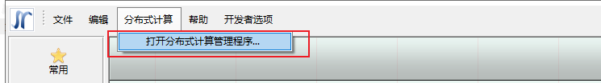
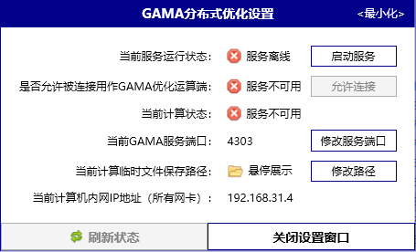
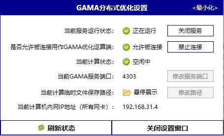
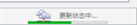
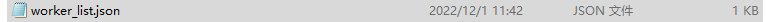
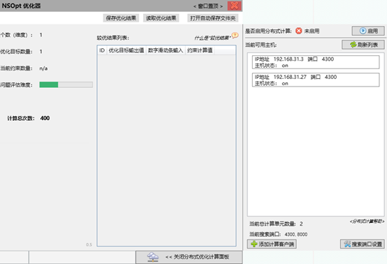
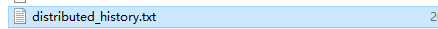

GAMA分布式计算教程
本次更新分布式计算的使用有了一些变化：
- 启动方式
- 搜寻规则
- 关闭方式
1．分布式计算模块配置
在安装之前，我们需要将杀毒软件关闭或者添加信任，在安装新版客户端后，在GAMA的界面打开分布式优化设置窗口

打开分布式计算管理窗口

启动服务前，我们可以修改服务端口和保存路径
点击启动服务

此时本机是出于可以被其他计算机连接的状态，如果不想被连接，点击禁止连接。
首次配置成功后，再次使用打开可以在安装目录下找到PDOM文件夹，双击PDOM.exe打开设置窗口
2.计算任务发布
我们可以在一台经过配置成功的计算机上进行任务发布。
我们打开YJK-GAMA，连接好优化卡组后，双击“优化器“或“穷举器“，这里我们以优化器为例。
选择遗传算法或粒子群算法，点击右下角”打开分布式优化计算面板”

之后等待状态更新

首次运行时，会根据网关搜索可连接的计算机，更新时间稍长。
首次运行后在YJK-GAMA安装目录下可以找到这个文件

这里保存着可以连接的客户端IP地址及端口信息
这里的搜索规则是，如果文件夹下有worker_list.json文件且其中连接列表非空，点击刷新列表时就会只对其中的IP地址和对应的端口进行连接测试，速度会很快。
读条结束后右侧会出现分布式优化计算面板

我们从上到下看面板的功能：
点击启用后，再启动优化器计算则为分布式计算模式，未启用时则是普通的优化计算模式。
在当前可用主机里我们可以看到可连接的主机，下面称他们为客户端，主机状态”on”对应“分布式计算模块的配置”设置中的允许被连接，即计算任务可以发布给该客户端；“off”则为不可连接，即不会将任务发布给该客户端。
这里需要注意的是，如果局域网内有客户端进行了正确的设置但没有被自动搜索到，可以点击左下角“添加计算客户端“进行手动添加。如果我们在客户端中修改过服务端口，在这里需要点击右下角的搜索端口设置，将自定义的服务端口输入并点击刷新列表进行重新自动搜索。
当以上步骤都设置成功后，我们可以点击优化器界面左下角的启动优化，这时候我们操作的主机将会作为服务器向其他客户端发布计算任务并接收计算结果
另外如果模块运行时发生错误时会将错误信息记录在安装目录下的distributed_history.txt中

3.关闭方式
更新后的分布式计算将不再采用注册服务的形式，在电脑用于计算期间，上图的设置窗口需要一直保持打开状态，可以点击右上角最小化进行隐藏窗口，当点击关闭设置窗口时，此电脑将无法连接到服务器，也无法再被搜索到。